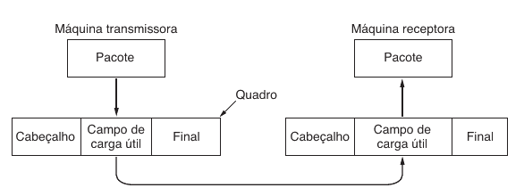
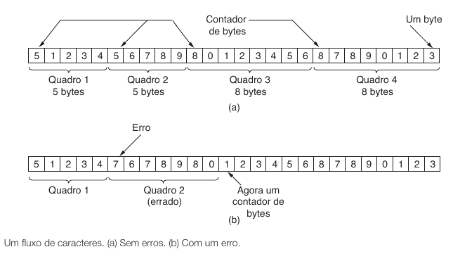
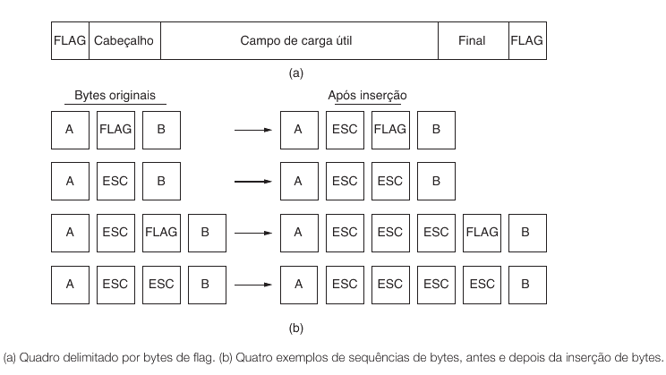
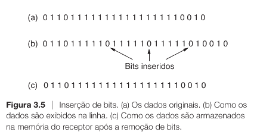
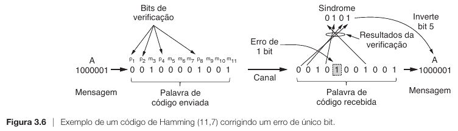

Introdução5.1
Na aula anterior, você viu a camada física como o nível em que a informação ainda não é uma mensagem no sentido usual. Nesse nível, a rede lida com pulsos elétricos, luz, rádio, largura de banda, atenuação, ruído e taxa de erro. Em outras palavras, a camada física não entende "arquivo", "texto", "requisição" ou "resposta". Ela entrega apenas um fluxo bruto de bits.
Esse fato cria um problema imediato. Se os bits chegam como uma sequência contínua, como o receptor sabe onde uma unidade de informação começa e onde termina? E mais: se o meio físico está sujeito a ruído, como o receptor percebe que um bit foi alterado no caminho? E se o emissor for rápido demais, como impedir que o receptor seja sobrecarregado?
Hoje veremos como a Camada de Enlace de Dados resolve exatamente esse conjunto de problemas. Ela pega o fluxo bruto produzido pela camada física e o transforma em quadros bem definidos, com fronteiras claras, mecanismos para detecção de erros e regras de coordenação entre quem envia e quem recebe.
A ideia central desta aula é simples: a camada física transporta bits, mas a camada de enlace transforma esses bits em unidades organizadas e confiáveis o bastante para que a camada de rede possa trabalhar.
O problema que a camada de enlace resolve5.2
Imagine que dois computadores estejam conectados por um meio físico qualquer. Para a camada física, enviar dados significa colocar bits no meio. Suponha então que o transmissor envie a sequência abaixo:
0111111001000001010000100111111001111110...
Se você fosse o receptor, teria três dificuldades imediatas.
- Você não saberia, por si só, onde um bloco útil começa.
- Você não saberia, por si só, onde esse bloco termina.
- Você não saberia, por si só, se algum bit foi alterado durante a transmissão.
Além disso, há um quarto problema menos visível, mas muito importante. Mesmo que a informação chegue correta, o receptor pode não conseguir processá-la na velocidade em que ela chega. Nesse caso, quadros podem ser perdidos não por ruído, mas por excesso de velocidade do emissor.
Se a camada física entrega apenas bits, quem decide onde estão os limites de cada mensagem útil e como o receptor deve reagir quando algo dá errado?
A resposta é a camada de enlace. Ela existe para tornar o enlace utilizável pela camada superior. Em termos práticos, isso significa quatro tarefas fundamentais.
- Enquadrar o fluxo de bits em unidades discretas chamadas quadros.
- Detectar erros que tenham ocorrido durante a transmissão.
- Controlar o envio e o recebimento para evitar perdas por excesso de velocidade.
- Coordenar confirmações, retransmissões e numeração quando for preciso confiabilidade.
Perceba a progressão lógica. Antes de perguntar se o dado chegou correto, você precisa saber qual é o dado. Antes de retransmitir um quadro, você precisa saber qual quadro foi perdido. E antes de mandar o próximo, você precisa saber se o receptor está pronto.
Onde a camada de enlace fica na pilha5.3
Na prática, a camada de enlace ocupa a região entre a camada física e a camada de rede.
flowchart TD
R["Camada de Rede<br/>Pacotes e endereçamento lógico"]
E["Camada de Enlace<br/>Quadros e integridade local"]
F["Camada Física<br/>Sinais, bits e meio de transmissão"]
R --> E --> F Essa posição intermediária é decisiva. A camada de rede quer receber uma unidade organizada. A camada física só oferece um fluxo bruto. A camada de enlace faz a ponte entre essas duas realidades.
Muitos alunos confundem quadro com pacote porque, durante o encapsulamento, um frequentemente carrega o outro. No entanto, eles pertencem a camadas diferentes.
Quando a camada de rede produz um pacote, esse pacote é colocado dentro de um quadro da camada de enlace. Esse quadro, por sua vez, é transformado em bits pela camada física. No destino, o processo é invertido.

Os serviços que a camada de enlace pode oferecer5.3.1
O Tanenbaum apresenta três formas gerais de serviço oferecido pela camada de enlace à camada de rede. O objetivo aqui não é decorar nomes, mas perceber o grau de sofisticação de cada opção.
| Serviço | Ideia | Quando faz sentido |
|---|---|---|
| Sem confirmação e sem conexão | Envia e segue em frente | Quando o enlace já é bastante confiável ou a correção será feita acima |
| Sem conexão, mas com confirmação | Cada quadro pode ser confirmado individualmente | Quando se quer confiabilidade local sem manter uma sessão formal |
| Orientado a conexão | Há estabelecimento, transferência e encerramento | Quando o enlace é mais delicado e a ordem e unicidade importam muito |
Não é obrigatório que toda tecnologia real use exatamente a mesma forma. O ponto importante é perceber o dilema de projeto. Quanto mais confiabilidade e controle você exige da camada de enlace, mais estado, mais quadros de controle e mais overhead ela tende a introduzir.
Em enlaces muito confiáveis, parte desse esforço pode ser considerada desnecessária. Em enlaces ruidosos, especialmente sem fio, o custo compensa porque corrige problemas mais perto da origem.
Do fluxo contínuo ao quadro5.4
A primeira missão concreta da camada de enlace é dividir o fluxo contínuo de bits em unidades reconhevíveis. Essa operação recebe o nome de enquadramento.
O que é enquadramento5.4.1
Enquadrar significa definir claramente onde um quadro começa e onde ele termina. Parece uma exigência simples, mas ela é muito mais delicada do que parece à primeira vista.
Se o receptor não souber onde está a fronteira do quadro, tudo o que vem depois fica ambíguo. Um erro pequeno em um ponto pode desalinhar toda a leitura, fazendo com que o receptor interprete partes de um quadro como se fossem o início do próximo.
Em termos práticos, um bom mecanismo de enquadramento precisa satisfazer dois objetivos ao mesmo tempo.
- Tornar simples a descoberta do início e do fim de cada quadro.
- Fazer isso sem desperdiçar largura de banda demais.
Se você escolher um byte especial para marcar o fim do quadro, o que acontece quando esse mesmo byte aparece dentro dos próprios dados do usuário?
Essa pergunta revela o coração do problema. A fronteira do quadro não pode ser confundida com dados legítimos. É por isso que o enquadramento não é apenas "colocar um marcador". É preciso garantir que o receptor saiba distinguir marcador de conteúdo.
Contagem de caracteres5.4.2
O método mais direto consiste em inserir, no cabeçalho do quadro, um campo que diga quantos bytes o quadro possui. O receptor lê esse campo e, a partir dele, sabe quantos bytes deve consumir até o fim do quadro.
Exemplo simples5.4.2.1
Suponha o quadro abaixo:
[Tamanho = 5][A][B][C][D][E]
Se o campo de tamanho disser 5, o receptor sabe que precisa ler exatamente 5 bytes de conteúdo.
Esse método parece elegante porque é compacto e direto. No entanto, ele tem um ponto fraco perigoso. Se o próprio campo de tamanho for corrompido por ruído, o receptor perde a noção da fronteira do quadro.
Exemplo de falha5.4.2.2
Considere que o transmissor enviou:
[Tamanho = 5][A][B][C][D][E]
[Tamanho = 4][F][G][H][I]
Se o primeiro campo de tamanho for alterado por erro e virar 7, o receptor tentará ler dois bytes a mais. Com isso, ele invadirá o quadro seguinte e a leitura inteira ficará desalinhada.

O problema da contagem de caracteres não é a ideia de comprimento em si. O problema é que um erro justamente no campo de comprimento compromete a interpretação estrutural do fluxo.
Por isso, esse método puro é conceitualmente simples, mas vulnerável quando usado isoladamente.
Bytes de flag com inserção de bytes5.4.3
Esse é o método mais natural para retomar o laboratório anterior. Nele, escolhemos um byte especial para marcar o início e o fim do quadro. Esse byte especial costuma ser chamado de flag.
A ideia básica5.4.3.1
Se FLAG marca a borda do quadro, então um quadro simples poderia ser enviado assim:
[FLAG][dados][FLAG]
Se os dados forem A B C, a transmissão poderia ficar:
[FLAG][A][B][C][FLAG]
Até aqui tudo parece resolvido. O problema aparece quando o dado do usuário contém justamente o byte escolhido como FLAG.
O conflito5.4.3.2
Suponha que o usuário queira transmitir:
[A][FLAG][B]
Se o transmissor colocar simplesmente:
[FLAG][A][FLAG][B][FLAG]
o receptor interpretará o FLAG no meio como fim do quadro. Ou seja, ele encerrará o quadro antes da hora.
Escape5.4.3.3
Para resolver isso, introduzimos um segundo byte especial, geralmente chamado ESC. A regra fica assim.
- Se um
FLAGaparecer nos dados, ele é transmitido comoESC FLAG. - Se um
ESCaparecer nos dados, ele é transmitido comoESC ESC.
Assim, o receptor sabe que, depois de um ESC, o próximo byte não deve ser interpretado como comando estrutural, mas como dado literal.

Flags com inserção de bits5.4.4
Em alguns protocolos, a delimitação é feita em nível de bits e não de bytes. Um padrão clássico de flag é:
$$01111110$$
Se esse padrão marca o início e o fim do quadro, surge exatamente o mesmo problema conceitual de antes: e se esse mesmo padrão aparecer dentro dos dados?
A solução agora não é inserir bytes de escape, mas usar inserção de bits.
Regra da inserção de bits5.4.4.1
Sempre que o transmissor encontra cinco bits 1 consecutivos dentro dos dados, ele insere automaticamente um 0 em seguida. O receptor, ao detectar cinco 1s seguidos dentro do conteúdo, remove esse 0 inserido artificialmente.
Com isso, o padrão especial de flag não aparece por acidente no campo de dados.
Intuição5.4.4.2
O objetivo não é mudar o dado permanentemente. O objetivo é garantir que o padrão reservado para controle não seja confundido com informação comum. No transmissor, há uma inserção. No receptor, há a remoção correspondente.
Esse método é conceitualmente irmão do byte stuffing. A diferença é a unidade do processo.
| Técnica | Unidade manipulada |
|---|---|
| Byte stuffing | bytes |
| Bit stuffing | bits |

O quadro como unidade de transmissão local5.5
Depois que você entende por que o enquadramento existe, fica mais fácil entender o próprio conceito de quadro. Um quadro não é apenas um "bloco qualquer". Ele é a unidade pela qual a camada de enlace organiza a transmissão local.
Um quadro costuma conter pelo menos três regiões conceituais.
- Cabeçalho, com informações de controle.
- Carga útil, com os dados que vieram da camada superior.
- Trailer, frequentemente usado para mecanismos de verificação, como CRC.
Uma representação conceitual simples é esta:
flowchart LR
H["Cabeçalho<br/>controle"]
D["Payload<br/>dados da camada superior"]
T["Trailer<br/>CRC / verificação"]
H --> D --> T O cabeçalho vem antes porque o receptor precisa entender logo no começo o que está chegando. O trailer com a verificação vem no final porque o valor de integridade normalmente é calculado a partir de todo o restante do quadro.
Isso levanta uma dúvida natural: como é a "cara" de um quadro na prática? Se você abrir o terminal do seu computador agora, consegue ver esses bits, o cabeçalho e o trailer?
A resposta curta é sim, mas com uma observação importante. A placa de rede (o hardware) faz boa parte do trabalho sujo. Quando capturamos o tráfego no sistema operacional, a placa já removeu sinais elétricos iniciais de sincronização e, na maioria das vezes, já validou e descartou o trailer de erro. O que vemos é o quadro "limpo".
Se a placa de rede processa e descarta as marcações de início e a verificação de erro do final, como o sistema operacional enxerga o quadro que chega da rede?
Para ver isso na prática, você precisará usar um capturador de pacotes no terminal Linux chamado tcpdump. No entanto, nomes de interfaces de rede variam (como eth0, enp3s0, wlan0). Se você tentar capturar em uma interface que não existe, o comando falhará.
Passo 1: Identificando sua interface5.5.0.1
Antes de capturar, descubra quais interfaces estão disponíveis no seu sistema usando um destes comandos:
ip link show(comando padrão do Linux moderno)sudo tcpdump -D(lista as interfaces que o tcpdump consegue ver)
Passo 2: Capturando o quadro5.5.0.2
Agora, escolha uma interface que esteja "UP" (conectada) e substitua no comando abaixo. Usaremos o sudo porque capturar tráfego bruto exige privilégios de superusuário (CAP_NET_RAW).
No comando abaixo, substitua SUA_INTERFACE pelo nome que você encontrou:
sudo tcpdump -c 1 -xx -i SUA_INTERFACE icmp
-c 1: captura apenas 1 pacote e para.-xx: mostra o conteúdo completo, incluindo o cabeçalho de enlace (Ethernet), em hexadecimal.-i: especifica a interface.
A saída típica será algo parecido com isto:
21:45:11.123456 IP 192.168.1.10 > 192.168.1.20: ICMP echo request
0x0000: 001a 2b3c 4d5e 0011 2233 4455 0800 4500
0x0010: 0054 1234 4000 4001 a1b2 c0a8 010a c0a8
...
Observe a primeira linha de dados hexadecimais (0x0000:). Ela contém o cabeçalho de enlace (o cabeçalho Ethernet). Cada par de letras/números representa um byte (8 bits).
- Destino (6 bytes):
00 1a 2b 3c 4d 5e(endereço MAC de quem vai receber) - Origem (6 bytes):
00 11 22 33 44 55(endereço MAC de quem enviou) - Tipo (2 bytes):
08 00(indica que o payload é um pacote IPv4)
A partir do 45 00..., começa a carga útil (o payload), que foi entregue pela camada de rede.
O terminal exibe em hexadecimal porque ler milhares de zeros e uns seria inviável para humanos. Mas, fisicamente, o cabo transmitiu isso bit a bit.
Se pegarmos os primeiros dois bytes do endereço de destino (00 1a), o que realmente viajou pelo meio físico foi a sua representação binária:
00em hexadecimal =00000000em binário1aem hexadecimal =00011010em binário
Então, a placa de rede emitiu os sinais correspondentes a:
00000000 00011010 ...
Se pudéssemos interceptar o sinal físico completo, antes do hardware limpá-lo para o sistema operacional, a estrutura completa com o cabeçalho e o trailer seria:
| Preâmbulo (Sincronização) | MAC Destino (Cabeçalho) | MAC Origem (Cabeçalho) | Tipo (Cabeçalho) | Payload (Dados) | FCS (Trailer) |
|---|---|---|---|---|---|
101010... |
00000000... |
00000000... |
00001000... |
... |
10110100... |
Esse exemplo prova duas coisas. Primeiro, o quadro possui uma estrutura posicional rígida; se o MAC de destino não tivesse exatamente 6 bytes, o receptor não saberia onde começa o MAC de origem. Segundo, o sistema operacional não precisa se preocupar com bits de sincronização ou recálculo constante de CRC, pois o hardware da placa de rede já realiza e abstrai essa camada física e o trailer de erro.
Quando os bits mudam no caminho5.6
Até agora resolvemos a pergunta "onde começa e termina o quadro?". O próximo problema é: o quadro chegou correto?
Essa pergunta existe porque o meio físico é imperfeito. Em um enlace real, ruído elétrico, interferência, atenuação, falhas de hardware e diversos outos efeitos podem alterar a informação transmitida.
Isso pode ocorrer de maneiras diferentes.
- Um único bit pode ser invertido.
- Vários bits podem ser alterados ao mesmo tempo.
- Os erros podem ocorrer isoladamente.
- Os erros podem ocorrer em rajadas.
Erros isolados e erros em rajada5.6.1
Um erro isolado é aquele em que apenas um bit, ou poucos bits separados, são alterados. Já um erro em rajada ocorre quando vários bits adjacentes são corrompidos em sequência.
Essa distinção importa porque diferentes códigos têm diferentes comportamentos contra esses dois padrões. Alguns mecanismos são bons para detectar alterações simples, mas menos eficazes para rajadas maiores. Outros foram projetados justamente para capturar padrões mais complexos.
Em redes reais, erros em rajada são comuns porque muitas causas físicas afetam intervalos curtos de transmissão, e não apenas um bit isolado de forma perfeitamente aleatória.
Detecção e correção de erros5.7
Neste ponto, é importante separar duas ideias que os alunos frequentemente misturam.
Detectar erro5.7.1
Detectar significa perceber que o quadro recebido não bate com aquilo que foi transmitido. O receptor conclui que houve corrupção, mas não necessariamente consegue reconstruir o conteúdo correto.
Corrigir erro5.7.2
Corrigir significa usar redundância suficiente para não apenas perceber o erro, mas também recuperar o valor original, ao menos em determinadas situações.
Uma forma intuitiva de distinguir as duas ideias é esta.
- Detecção: "sei que algo deu errado".
- Correcão: "sei que algo deu errado e consigo consertar".
Em enlaces bastante confiáveis, costuma ser mais eficiente detectar e retransmitir. Em enlaces mais ruidosos ou em cenários em que retransmissão é cara, a correção local pode compensar.
O papel da redundância5.7.3
Nada disso seria possível se o transmissor enviasse apenas os dados crus e nada mais. O segredo está em adicionar redundância. Essa redundância não existe para o usuário final. Ela existe para o protocolo.
Em essência, o transmissor envia:
flowchart LR
D["Dados"] --> R["Redundância"] --> Q["Quadro verificável"] O receptor usa essa informação redundante para verificar se o quadro recebido ainda é compatível com um quadro válido.
A ideia de distância de Hamming5.7.4
O Tanenbaum introduz um conceito muito importante para pensar formalmente sobre erro: a distância de Hamming. Ela mede em quantas posições dois blocos de bits diferem.
Por exemplo:
10001001
10110001
Essas duas sequências diferem em três posições. Dizemos então que a distância de Hamming entre elas é 3.
Esse conceito é valioso porque permite raciocinar sobre o poder de um código.
- Para detectar até $d$ erros, o código precisa de certa separação mínima entre palavras válidas.
- Para corrigir erros, a exigência é ainda maior.
Não precisamos aprofundar a teoria formal toda agora, mas vale guardar a intuição. Quanto mais "separadas" estão as palavras válidas de um código, mais fácil fica perceber que uma palavra recebida caiu em uma região inválida.
Códigos de correção de erros5.8
O livro apresenta quatro grandes famílias como exemplos.
- Códigos de Hamming
- Códigos convolucionais binários
- Códigos de Reed-Solomon
- Códigos LDPC
O objetivo desta aula não é treinar a matemática completa desses códigos, mas compreender por que eles existem.
Código de Hamming5.8.1
O código de Hamming é o exemplo clássico de correção de erro em cursos introdutórios. Sua grande importância didática está no fato de mostrar que, com bits extras colocados em posições estratégicas, é possível identificar qual bit foi corrompido e corrigi-lo.
Ele é ideal para introduzir a noção de que redundância bem organizada pode tornar o erro localizável.
Exemplo passo a passo5.8.2
Para deixar a ideia concreta, vamos usar um Hamming (7,4). Isso significa:
- 4 bits de dados reais;
- 3 bits de verificação;
- 7 bits no total.
Suponha que os dados que queremos transmitir sejam:
1011
No código de Hamming, as posições que são potência de 2 ficam reservadas para verificação. Portanto:
| Posição | 1 | 2 | 3 | 4 | 5 | 6 | 7 |
|---|---|---|---|---|---|---|---|
| Tipo | p1 | p2 | d1 | p4 | d2 | d3 | d4 |
Agora colocamos os 4 bits de dados nas posições que sobraram:
| Posição | 1 | 2 | 3 | 4 | 5 | 6 | 7 |
|---|---|---|---|---|---|---|---|
| Conteúdo | p1 | p2 | 1 | p4 | 0 | 1 | 1 |
O próximo passo é calcular os bits de paridade.
Como decidir quais posições cada bit verifica5.8.2.1
Esse padrão nao e arbitrario. O criterio vem da representacao binaria da posicao. Veja as posicoes de 1 a 7 em binario:
| Posição | Binário |
|---|---|
| 1 | 001 |
| 2 | 010 |
| 3 | 011 |
| 4 | 100 |
| 5 | 101 |
| 6 | 110 |
| 7 | 111 |
Agora entra a regra do Hamming:
p1verifica todas as posicoes cujo ultimo bit binario e1p2verifica todas as posicoes cujo bit do meio e1p4verifica todas as posicoes cujo primeiro bit e1
Por isso os grupos ficam assim:
p1verifica1, 3, 5, 7porque001, 011, 101, 111terminam em1p2verifica2, 3, 6, 7porque010, 011, 110, 111tem o bit do meio igual a1p4verifica4, 5, 6, 7porque100, 101, 110, 111tem o primeiro bit igual a1
Se escolhermos paridade par, cada um desses grupos deve terminar com quantidade par de bits 1.
Cada posicao do quadro tem uma combinacao unica desses testes. Quando algumas paridades falham e outras nao, o receptor consegue reconstruir o numero da posicao com erro a partir desse padrao.
Calculando p15.8.2.2
p1 observa as posições 1, 3, 5, 7.
Temos, por enquanto:
p1, 1, 0, 1
Já existem dois bits 1, que é uma quantidade par. Portanto:
p1 = 0
Calculando p25.8.2.3
p2 observa as posições 2, 3, 6, 7.
Temos:
p2, 1, 1, 1
Já existem três bits 1, que é uma quantidade ímpar. Então precisamos de mais um 1 para tornar o total par:
p2 = 1
Calculando p45.8.2.4
p4 observa as posições 4, 5, 6, 7.
Temos:
p4, 0, 1, 1
Já existem dois bits 1, que é uma quantidade par. Portanto:
p4 = 0
Palavra final transmitida5.8.2.5
Substituindo os bits de verificação, o quadro final fica:
0 1 1 0 0 1 1
ou, sem espaços:
0110011
Como o receptor detecta e corrige5.8.3
Agora imagine que, no caminho, o bit da posição 5 foi corrompido. O receptor passa a receber:
0110111
O receptor repete as verificações:
- grupo de
p1: posições1, 3, 5, 7 - grupo de
p2: posições2, 3, 6, 7 - grupo de
p4: posições4, 5, 6, 7
Vamos calcular cada teste explicitamente.
Verificação de p15.8.3.1
p1 cobre as posições 1, 3, 5, 7.
No quadro recebido 0110111, esses bits são:
posição 1 = 0
posição 3 = 1
posição 5 = 1
posição 7 = 1
Somando os bits 1, temos 3 bits 1, que é quantidade ímpar.
Como esperávamos paridade par, isso significa:
teste de p1 = 1 (falhou)
Verificação de p25.8.3.2
p2 cobre as posições 2, 3, 6, 7.
Esses bits são:
posição 2 = 1
posição 3 = 1
posição 6 = 1
posição 7 = 1
Temos 4 bits 1, que é quantidade par.
Portanto:
teste de p2 = 0 (passou)
Verificação de p45.8.3.3
p4 cobre as posições 4, 5, 6, 7.
Esses bits são:
posição 4 = 0
posição 5 = 1
posição 6 = 1
posição 7 = 1
Temos 3 bits 1, que é quantidade ímpar.
Portanto:
teste de p4 = 1 (falhou)
Montando a síndrome5.8.3.4
Agora juntamos os resultados na ordem dos bits de verificação, do maior para o menor:
p4 p2 p1
1 0 1
Isso gera a síndrome:
101
Em binário, 101 = 5.
Ou seja, o próprio padrão das verificações informa que o erro está na posição 5.
Ou seja, o próprio padrão de erro aponta para a posição 5 como bit defeituoso.
O receptor então:
- identifica a posição 5 como incorreta;
- inverte esse bit;
- recupera a palavra correta;
- remove os bits de verificação e entrega os 4 bits originais.
O poder do código de Hamming está no fato de que cada posição do quadro participa de um conjunto diferente de verificações. Quando algumas verificações falham e outras não, esse padrão funciona como um "endereço" do bit com defeito.

Códigos convolucionais5.8.4
Ao contrário dos códigos de bloco mais simples, códigos convolucionais tratam o fluxo de dados de forma contínua, fazendo a redundância depender não apenas do bit atual, mas também de bits anteriores. Eles são muito úteis em canais ruidosos, especialmente em comunicação sem fio.
Reed-Solomon5.8.5
Os códigos de Reed-Solomon são famosos por sua força contra erros em rajada. Eles aparecem em mídias como CDs, DVDs, transmissões via satélite e outros cenários em que sequências inteiras podem ser comprometidas de uma só vez.
LDPC5.8.6
Os códigos LDPC tornaram-se extremamente relevantes em protocolos modernos porque oferecem excelente capacidade de correção para blocos grandes, com desempenho prático muito forte. Eles aparecem em tecnologias recentes e em enlaces de alta velocidade.
O ponto didático aqui não é decorar as famílias de códigos, mas perceber o dilema de engenharia. Corrigir erro diretamente no receptor reduz a necessidade de retransmissão, porém exige mais redundância e processamento.
Códigos de detecção de erros5.9
Agora chegamos ao foco principal da aula. Em muitos enlaces com fio de boa qualidade, a estratégia mais eficiente não é corrigir tudo localmente. É detectar o erro e então retransmitir quando necessário.
O Tanenbaum destaca três mecanismos clássicos de detecção.
- Paridade
- Checksums
- CRC
Paridade5.9.1
O bit de paridade é o mecanismo mais simples de todos. A ideia é acrescentar um único bit de modo que o número total de bits 1 no bloco seja par ou ímpar.
Exemplo5.9.1.1
Se enviarmos:
1011010
e quisermos paridade par, escolhemos o bit extra de modo que o total de 1s fique par. Se o número de 1s já for par, o bit extra será 0. Se for ímpar, ele será 1.
O que ele faz bem5.9.1.2
O bit de paridade detecta muito bem um erro único de bit.
O que ele não faz bem5.9.1.3
Se dois bits forem invertidos, a paridade pode continuar correta. Nesse caso, o receptor não detectará o problema.
O bit de paridade é excelente para ensinar a lógica da redundância, mas fraco demais para ser a principal defesa de protocolos mais exigentes.
Checksum5.9.2
O checksum é uma ideia um pouco mais forte. Em vez de um único bit de paridade, o transmissor calcula um valor resumo a partir do conteúdo do quadro. Esse valor é enviado junto. O receptor refaz o cálculo e compara o resultado.
Se os dois valores divergirem, houve erro.
A intuição é simples. Em vez de verificar apenas se o total de 1s é par ou ímpar, o protocolo calcula uma espécie de assinatura resumida dos dados. Isso amplia bastante a capacidade de perceber alterações.
Checksums são comuns em várias camadas e protocolos, justamente por serem simples de implementar e eficientes em muitos casos práticos.
CRC5.9.3
O Cyclic Redundancy Check, ou CRC, é um dos mecanismos de detecção mais importantes da prática de redes. Ele é forte o bastante para detectar com grande confiabilidade muitos padrões de erro relevantes, inclusive várias rajadas de bits alterados.
Ele oferece uma excelente combinação de robustez e custo. Em comparação com mecanismos muito simples, como paridade, ele detecta muito mais padrões relevantes de erro. Em comparação com técnicas completas de correção local, ele exige menos overhead do que uma solução de FEC robusta.
Comparando os três mecanismos5.9.4
| Mecanismo | Custo | Poder de detecção | Uso didático/prático |
|---|---|---|---|
| Paridade | Muito baixo | Baixo | Excelente para ensinar a ideia básica |
| Checksum | Baixo a médio | Médio | Muito usado em várias camadas |
| CRC | Médio | Alto para muitos erros relevantes | Padrão prático em diversos protocolos |
Em muitos enlaces, a dupla "detectar com CRC + retransmitir quando necessário" é uma solução muito eficiente.
Questões5.10
1. Explique, com suas palavras, por que a camada física sozinha não é suficiente para entregar dados de forma organizada à camada de rede.
2. Diferencie claramente as unidades abaixo e diga a que camada cada uma pertence:
- bits
- quadro
- pacote
3. No método de contagem de caracteres, qual é a principal fragilidade quando ocorre erro justamente no campo de comprimento do quadro?
4. Considere um protocolo com FLAG como delimitador de quadro e ESC como byte de escape.
- a) Mostre como a sequência de dados
[A][FLAG][B]deve ser transmitida com byte stuffing. - b) Mostre como a sequência
[A][ESC][B]deve ser transmitida.
5. Explique a diferença conceitual entre byte stuffing e bit stuffing.
6. Um aluno afirmou o seguinte: "Basta colocar um marcador de início e fim. Se esse marcador aparecer dentro dos dados, o receptor consegue perceber pelo contexto". Explique por que essa afirmação está errada.
7. Diferencie detecção de erros de correção de erros.
8. Sobre os mecanismos de verificação, marque V ou F:
- ( ) Um único bit de paridade consegue detectar com segurança qualquer quantidade de bits invertidos em um bloco.
- ( ) O CRC é usado amplamente porque oferece boa capacidade de detecção para muitos padrões relevantes de erro.
- ( ) Checksums e CRC são formas de adicionar redundância para verificar integridade.
- ( ) Se um erro for detectado, isso significa automaticamente que o receptor já sabe reconstruir o valor correto.
9. Explique por que erros em rajada costumam ser mais difíceis de tratar do que erros isolados.
10. O que é controle de fluxo e qual problema ele tenta evitar?
11. No protocolo stop-and-wait em canal sem erro, por que o transmissor precisa esperar por uma confirmação antes de enviar o próximo quadro?
12. Analise o cenário abaixo:
- A envia um quadro para B.
- B recebe corretamente e entrega o dado.
- B envia um ACK.
- O ACK se perde.
- A entra em timeout e retransmite o quadro.
Explique por que esse cenário pode gerar duplicação se o protocolo não usar número de sequência.
13. Por que um número de sequência de apenas 1 bit é suficiente no stop-and-wait?
14. Diferencie os conceitos abaixo:
- controle de fluxo
- controle de congestionamento
15. Relacione a teoria da aula com o laboratório anterior, explicando o papel de cada item abaixo em uma implementação simplificada de enlace:
FLAGESCCRC
1. Porque a camada física entrega apenas um fluxo bruto de bits ou sinais. Ela não define claramente fronteiras de mensagens, não oferece necessariamente detecção suficiente de erros em nível de quadro e não coordena confirmações, retransmissões e ritmo entre emissor e receptor.
2. Bits pertencem à camada física e representam a forma bruta da informação transmitida. Quadro pertence à camada de enlace e organiza a transmissão local com cabeçalho, dados e verificação. Pacote pertence à camada de rede e representa a unidade lógica usada para encaminhamento na rede.
3. Se o campo de comprimento for corrompido, o receptor perde a noção do fim do quadro e pode consumir bytes do quadro seguinte, desalinhando toda a interpretação do fluxo.
4.
- a)
[FLAG][A][ESC][FLAG][B][FLAG] - b)
[FLAG][A][ESC][ESC][B][FLAG]
5. Byte stuffing manipula bytes especiais, inserindo um byte de escape antes deles. Bit stuffing manipula bits, inserindo um 0 após uma sequência de cinco 1s para impedir que o padrão de flag apareça dentro dos dados.
6. Porque o receptor não pode depender de contexto ambíguo para decidir se um valor é dado ou controle. Se o delimitador puder aparecer nos dados sem mecanismo de escape, o protocolo perde a capacidade de identificar com segurança o fim real do quadro.
7. Detecção indica que houve erro, mas não necessariamente recupera o valor correto. Correção tenta identificar e reconstruir o valor original sem depender de retransmissão, ao menos em certos casos.
8.
- ( F ) Um único bit de paridade consegue detectar com segurança qualquer quantidade de bits invertidos em um bloco.
- ( V ) O CRC é usado amplamente porque oferece boa capacidade de detecção para muitos padrões relevantes de erro.
- ( V ) Checksums e CRC são formas de adicionar redundância para verificar integridade.
- ( F ) Se um erro for detectado, isso significa automaticamente que o receptor já sabe reconstruir o valor correto.
9. Porque vários bits consecutivos podem ser afetados ao mesmo tempo, o que exige mecanismos mais robustos para detectar ou corrigir o padrão de corrupção. Muitos códigos simples são pensados primeiro para erros isolados.
10. Controle de fluxo é o mecanismo que impede um transmissor rápido de sobrecarregar um receptor lento. Ele evita perda de quadros por falta de capacidade de processamento ou buffer no lado receptor.
11. Porque, sem essa espera, o transmissor poderia enviar quadros mais rapidamente do que o receptor consegue processar, gerando perda mesmo em canal sem ruído.
12. Porque A não sabe se o quadro chegou e, ao retransmiti-lo, pode fazer com que B receba o mesmo conteúdo uma segunda vez. Sem número de sequência, B não distingue um quadro novo de uma cópia do anterior.
13. Porque no stop-and-wait só existe uma ambiguidade relevante por vez: entre o quadro atual e o próximo. Assim, alternar entre 0 e 1 já basta para distinguir nova transmissão de retransmissão.
14. Controle de fluxo trata do ritmo entre um emissor e um receptor específicos. Controle de congestionamento trata do excesso de carga na rede como um todo.
15. FLAG delimita início e fim do quadro. ESC impede que bytes especiais do controle sejam confundidos com dados durante o enquadramento. CRC permite ao receptor recalcular um valor de verificação e decidir se o quadro chegou íntegro ou corrompido.
Próximos passos5.11
Na próxima aula, avançaremos dos protocolos básicos vistos aqui para mecanismos mais eficientes, em que vários quadros podem ficar em trânsito ao mesmo tempo. Isso nos levará naturalmente aos protocolos de janela deslizante, onde veremos como melhorar a utilização do enlace sem abandonar a confiabilidade construída com confirmações, temporizadores e números de sequência.